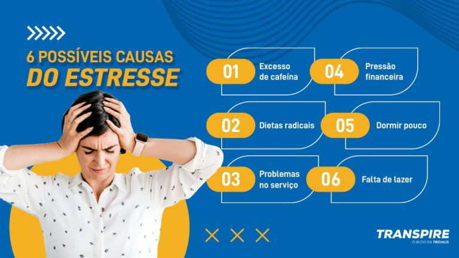

6 possíveis causas do estresse na sua rotina

Uma vida turbulenta nos faz pensar que é impossível ficar em paz, afinal, todo dia é dia para resolver problemas. Esse tipo de pensamento e estilo de vida prejudica em níveis preocupantes a qualidade de vida, porém, nem tudo está perdido! Para isso, conhecer as causas do estresse é um exercício necessário para desgastar menos a saúde mental.
Tal problema é tão usual que, segundo a Organização Mundial da Saúde, mais de 90% da população mundial já passou ou ainda passa por estresse. Dessa forma, é importante abordar o assunto, conhecer as origens desse contratempo e saber como é possível combatê-lo.
Para isso, confira o conteúdo a seguir!
6 possíveis causas do estresse
Desânimo, sensação de lutar ou fugir, cabeça agitada ou insônia. Por acaso você apresenta algum desses sintomas? O estresse, por ser uma reação do corpo ao excesso de problemas que uma pessoa precisa lidar num dia, pode acarretar as características citadas acima.
A vida moderna, mesmo com suas facilidades, ainda assim apresenta muitos empecilhos, e um deles é o excesso de informação. Muitas notícias, aliadas aos problemas do dia a dia, nos levam a crer que é essencial ficar atento a todo momento. Sendo assim, as causas do estresse começam a surgir e, para entender melhor, você confere 6 origens desse problema e como é possível evitá-lo.
1. Excesso de cafeína
Para começar o dia, uma xícara de café, para ter produtividade, outra xícara, depois do almoço, mais uma dose de cafeína. Esse excesso é bem prejudicial para o corpo, pois mesmo com a sensação de estar acordado e com energia, essa bebida pode trazer consequências negativas.
Perda de sono, aumento da adrenalina e cortisol, além de ser um dos gatilhos para a ansiedade, o café, caso não seja dosado, vai interferir na sua rotina e ser uma das possíveis causas do estresse. Mesmo que você seja um amante da bebida, é preciso controlar o consumo.
Para isso, tomar café descafeinado, reduzir o consumo diário e evitar ingerir a bebida na parte da noite já são alternativas para melhorar a qualidade de vida e ainda evitar o estresse. Em casos mais controlados, é possível substituir o café, mas isso vai da vontade de cada um.
2. Dietas radicais
Adaptar a alimentação para perder peso ou estar nos padrões é um grande desafio que gera estresse, afinal, você deixa de comer alimentos que estão ligados ao prazer e satisfação. Como impacto, sentimentos de tristeza e raiva acabam surgindo de forma frequente, o que pode impactar diretamente a saúde mental!
O cardápio alimentício é uma ferramenta que ajuda a entrar na reeducação alimentar, afinal, comer bem ajuda a reduzir o estresse. Sem contar que, ao aprender a comer, se você ingerir um doce ou outro alimento processado, você não terá sentimentos de culpa, pois vez ou outra é possível comer o que gosta.
Se você deseja controlar o estresse e não ter problemas por causa das dietas restritivas, busque apoio profissional para que esse não seja um problema a mais na sua vida. Comer é uma necessidade, logo, não é bem-vindo viver de restrições para uma necessidade tão importante para todos!
3. Problemas no serviço
Pressão para chegar nos resultados, bater metas ou lidar com excesso de serviço, a rotina no trabalho por si é um fator estressante, ainda mais para aqueles que passam 8 horas diárias resolvendo problemas. Sendo assim, se o seu serviço te causa gatilhos e danos à saúde, está na hora de rever o ambiente!
Algumas pessoas podem lidar com a troca de emprego, porém, muitos não têm essa opção. É por isso que o serviço é uma das grandes causas do estresse no país. Contudo, caso essa não seja sua realidade, uma dica simples, porém eficaz, é não deixar que os problemas do serviço entrem na vida pessoal.
Para além disso, definir regras, controlar o fluxo de atividades e até não trabalhar depois do expediente são conselhos necessários para manter o bem-estar. Claro, isso só será possível se o local favorecer essas condições, caso contrário, é necessário reavaliar, com urgência, para não colapsar a saúde do corpo e mente!
4. Pressão financeira
Contas a pagar, alimentos com preços exorbitantes e ainda é necessário ter lazer. Com salário baixo ou pouco dinheiro sobrando, como é possível ter paz? Infelizmente, a pressão financeira é uma das grandes causas do estresse, sem contar que atinge a todos, independentemente da idade.
Se você começou a trabalhar a pouco tempo, é importante dividir gastos e investir nos estudos. Se for mais velho, cuidar da casa, remédios e assim por diante. Com a baixa valorização da mão de obra, parece impossível ganhar bem.
Milagres não existem, ainda mais quando o assunto é dinheiro, mas aprender um pouco sobre finanças pode ser um caminho para evitar que os gastos sejam gatilhos para o estresse. A consciência e o conhecimento sobre o assunto podem evitar dívidas, gastos desnecessários, além de aprender a mediar gastos e salvar dinheiro.
5. Dormir pouco
Não há contra-argumento, dormir é uma necessidade e o único meio de descanso para recuperar as energias. Porém, o uso em excesso de telefone e demais dispositivos eletrônicos atrapalham a boa noite de sono.
Se o ideal é dormir 8h por dia e você pode controlar esse tempo, é importante realizar a higiene do sono para ter uma boa noite de sono, afinal, caso durma pouco, irritabilidade e estresse serão as consequências desse ato.
Adapte o local que dorme, evite o uso de celular ao estar deitado e busque demais hábitos que possam te ajudar a dormir melhor. Uma boa noite de sono pode ser o grande remédio para combater o estresse, então descanse sempre que possível!
6. Falta de lazer
Por fim, não há como falar das causas do estresse sem citar a falta de lazer, afinal, não é justo viver para trabalhar. Ou caso tenha tempo livre, não poder fazer algo pela falta de dinheiro. Tais situações criam problemas na cabeça de muitas pessoas, pois estão sendo privadas de fazer algo que desejam.
Infelizmente, esse também é um tópico que não há tantas opções para solucionar, mas saiba que sair para caminhar, reunir os amigos e até ver os familiares são atitudes para aproveitar o momento e relaxar. Para além disso, ver um filme, série ou investir em algum hobbie simples pode ser a solução para combater o estresse!
Se você está passando por estresse, é bem provável que algum desses itens sejam os motivos para estar assim. Entre os impactos mais visíveis estão:
- Falta de produtividade.
- Sentimento de paralisia.
- Incapacidade de manter diálogo.
- Raiva ou angústia constante.
Em todos os casos, o devido acompanhamento psicológico pode ser útil para tratar o problema, sendo assim, não deixe que o estresse tome conta da sua vida e prejudique a sua saúde mental. É possível amenizar o problema, e aqui você viu algumas dicas para te auxiliar nesse processo!